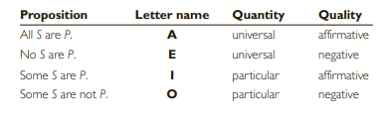

Categorical Propositions
Originated by Aristotle, the concept of categorical propositions has constituted one of the core topics in logic for over 2,000 years. It remains important even today because many of the statements we make in ordinary discourse are either categorical propositions as they stand or are readily translatable into them.
Standard-form categorical propositions represent an ideal of clarity in language, and a familiarity with the relationships that prevail among them provides a backdrop of precision for all kinds of linguistic usage.
Chapter Outline
- The Components of Categorical Propositions
- Attributes of Categorical Propositions: Quality, Quantity, and Distribution
- Representing Categorical Propositions
- Venn Diagrams
- Boolean and Aristotelian Square of Oppositions
- Evaluating Immediate Inferences: Venn Diagrams and Square of Oppositions
- Logical Operations: Conversion, Obversion, and Contraposition
- Translating Ordinary Language Statements into Categorical Form
Objectives
By the end of this chapter, you will be able to:
-
Define and identify categorical propositions:
- Understand the fundamental structure of categorical propositions, including their subjects, predicates, and copulas.
- Distinguish between affirmative and negative propositions, as well as universal and particular propositions.
- Recognize the four basic forms of categorical propositions (A, E, I, O).
-
Explain the key components of categorical propositions:
- Analyze the roles of subjects, predicates, copulas, and quantifiers within propositions.
- Understand the concepts of quality, quantity, and distribution, and their impact on the meaning of propositions.
- Explain how categorical propositions categorize subjects and predicates.
-
Represent categorical propositions using various formats:
- Construct Venn diagrams to visually represent the relationships between subjects and predicates in propositions.
- Apply the Boolean and Aristotelian square of oppositions to categorize and compare different propositional forms.
- Translate propositions from ordinary language into formal categorical form.
-
Evaluate immediate inferences from categorical propositions:
- Use Venn diagrams and the square of oppositions to identify valid immediate inferences from given propositions.
- Recognize valid inferences like conversion, obversion, and contraposition.
- Analyze the limitations of immediate inferences and their dependence on propositional form.
-
Apply logical operations to transform propositions:
- Perform conversion, obversion, and contraposition on categorical propositions to derive new valid conclusions.
- Understand the conditions under which each operation is valid and the limitations involved.
- Utilize logical operations to analyze and manipulate arguments based on categorical propositions.
The Components of Categorical Propositions
A categorical proposition is a statement that establishes a relationship between two classes or categories. The subject term represents one class, while the predicate term represents another class. The proposition asserts that either the entire subject class or a portion of it is either included in or excluded from the predicate class.
Given that a categorical proposition asserts the inclusion or exclusion of the subject class in relation to the predicate class, we can identify four distinct types of standard form categorical propositions:
1. Universal Affirmative
These propositions assert that the entire subject class is included in the predicate class. For example, "All birds can fly" states that every member of the subject class (birds) is part of the predicate class (things that can fly).
2. Particular Affirmative
These propositions assert that only a portion of the subject class is included in the predicate class. For instance, "Some dogs are friendly" indicates that at least some members of the subject class (dogs) fall into the predicate class (friendly animals).
3. Universal Negative
These propositions assert that the entire subject class is excluded from the predicate class. An example would be "No insects are mammals," which states that no member of the subject class (insects) is part of the predicate class (mammals).
4. Particular Negative
These propositions assert that a portion of the subject class is excluded from the predicate class. For instance, "Some fruits are not citrus" indicates that at least some members of the subject class (fruits) do not belong to the predicate class (citrus fruits).
A categorical proposition that expresses these relations with complete clarity is called a standard-form categorical proposition. A categorical proposition is in standard form if and only if it is a substitution instance of one of the following four forms:
- All S are P.
- No S are P.
- Some S are P.
- Some S are not P.
Many categorical propositions, of course, are not in standard form because, among other things, they do not begin with the words "all," "no," or "some."
Quantifiers are words that specify the extent to which the subject class is included in or excluded from the predicate class. The quantifiers "all," "no," and "some" play this role in categorical propositions.
The use of "all" indicates that the entire subject class is included in the predicate class, while "no" asserts that the entire subject class is excluded from the predicate class. On the other hand, the word "some" always signifies that at least one member of the subject class is involved.
To represent these propositions symbolically, the subject term is represented by the letter S, and the predicate term is represented by the letter P. The words "are" and "are not" serve as the copula, linking or connecting the subject term with the predicate term.
Quantifiers such as "all," "no," and "some" specify the quantity or extent of inclusion or exclusion between the subject and the predicate classes in a categorical proposition. The copula, represented by "are" and "are not," acts as the linking word that couples the subject term and the predicate term together.
Exercise
In the following categorical propositions, identify the quantifier, subject term, copula, and predicate term.
-
Proposition: All electric vehicles are cars that reduce greenhouse gas emissions.
-
Proposition: Some social media platforms are websites that promote misinformation.
-
Proposition: No fast food chains that use sustainable packaging are companies that contribute to plastic pollution.
-
Proposition: Some renewable energy sources are technologies that harness solar power.
-
Proposition: All online learning platforms are tools that provide accessible education.
-
Proposition: Some self-driving cars are vehicles that improve road safety.
Quality, Quantity, and Distribution
Quality and quantity are attributes of categorical propositions. In order to see how these attributes pertain, it is useful to rephrase the meaning of categorical propositions in class terminology:
Quality
The quality of a categorical proposition refers to whether it affirms or denies class membership. Categorical propositions can be classified as either affirmative or negative based on their quality.
Affirmative propositions state that there is a connection or inclusion between the subject and predicate classes. For example, "All S are P" and "Some S are P" are affirmative propositions. They affirm that there is a relationship between the subject class (S) and the predicate class (P).
Negative propositions deny the class membership or connection between the subject and predicate classes. Examples of negative propositions include "No S are P" and "Some S are not P." These propositions express the absence of a relationship or inclusion between the subject class (S) and the predicate class (P).
Quantity
The quantity of a categorical proposition refers to whether the statement applies universally or only to a portion of the subject class.
Universal propositions make a claim about every member of the subject class. Both "All S are P" and "No S are P" are universal propositions, as they assert something about every member of the subject class (S).
Particular propositions, on the other hand, assert something about one or more members of the subject class without making a claim about all of them. "Some S are P" and "Some S are not P" are particular propositions since they refer to at least one member of the subject class (S), without encompassing the entire class.
It is important to note that the quantity of a categorical proposition can often be determined by examining the quantifier used. The words "all" and "no" immediately imply universal quantity, while the word "some" implies particular quantity. However, it is worth mentioning that categorical propositions do not have a specific "qualifier" term.
In universal propositions, the quality is determined by the quantifier used. For example, in the proposition "All S are P," the quantifier "all" indicates universal quantity, and the proposition is affirmative. Similarly, in the proposition "No S are P," the quantifier "no" implies universal quantity, and the proposition is negative.
In particular propositions, the quality is determined by the copula, which is the linking verb between the subject and predicate terms. For instance, in the proposition "Some S are P," the copula "are" indicates particular quantity, and the proposition is affirmative. In contrast, in the proposition "Some S are not P," the copula "are not" suggests particular quantity, and the proposition is negative.
To provide a concise way of denoting the four different kinds of categorical propositions, they are commonly designated by letter names corresponding to the first four vowels of the Roman alphabet: A, E, I, and O.
- The universal affirmative proposition is represented by an A proposition.
- The universal negative proposition is represented by an E proposition.
- The particular affirmative proposition is represented by an I proposition.
- The particular negative proposition is represented by an O proposition.
The material presented thus far in this section may be summarized as follows:
Distribution
Distribution is an attribute that applies to the terms (subject and predicate) of categorical propositions, unlike quality and quantity which are attributes of the propositions themselves.
A term is considered distributed if the proposition makes a statement about every member of the class indicated by that term. In other words, a term is distributed if the proposition assigns or attributes something to every member of the class it represents. On the other hand, if the proposition does not make an assertion about every member of the class, the term is considered undistributed.
To remember the rule for distribution, it can be helpful to use a mnemonic: "Unprepared Students Never Pass." By focusing on the first letter of each word in this phrase, one can recall that Universals (A and E statements) distribute Subjects, while Negatives (E and O statements) distribute Predicates.
In summary, distribution is an attribute of the terms in categorical propositions, and it determines whether the proposition makes a statement about every member of a class. Universal statements distribute their subject terms, and negative statements distribute their predicate terms.
Another mnemonic that accomplishes the same purpose is “Any Student Earning B’s Is Not On Probation.” In this mnemonic the first letters may help one recall that A statements distribute the Subject, E statements distribute Both terms, I statements distribute Neither term, and O statements distribute the Predicate.
It can be summarized as follows:
Exercise
In the following categorical propositions identify the letter name, quantity, and quality. Then state whether the subject and predicate terms are distributed or undistributed.
-
Some entrepreneurs are innovators who disrupt traditional industries with their groundbreaking ideas.
-
All renewable energy sources are alternatives that reduce dependence on fossil fuels.
-
Some social media platforms are tools that facilitate global communication and networking.
Change the quality but not the quantity of the following categorical propositions:
-
Some slumlords are people who eventually wind up in jail.
-
Some scientific discoveries are breakthroughs that revolutionize our understanding of the universe.
-
No addictive substances that are consumed in excess are beneficial to long-term health.
Change the quantity but not the quality of the following categorical propositions:
-
Some prescription medicines are substances hazardous to human health.
-
Some shelter animals are not good prospects for adoption.
-
No tax proposals that favor the rich are fair proposals.
Venn Diagrams and the Boolean (Modern) Square of Opposition
The main objective of our investigation into categorical propositions is to understand their role in constructing arguments. However, universal propositions (A and E) can be interpreted in two distinct ways, and depending on which, an argument may be valid or invalid. Therefore, before analyzing arguments, we need to explore the two possible interpretations of universal propositions. Our exploration will primarily focus on a concept known as existential import.
To illustrate the concept of existential import, let's consider the following pair of propositions:
- All Tom Cruise's movies are hits.
- All unicorns are one-horned animals.
In everyday conversation, the first proposition implies that Tom Cruise has indeed made some movies. In other words, the statement carries existential import. It suggests that one or more movies associated with Tom Cruise actually exist. On the contrary, the second statement does not make such an implication. Although the statement can be considered true because unicorns, by definition, have a single horn, it does not imply the actual existence of unicorns.
The question arises as to how universal propositions should be interpreted in terms of implying the actual existence of the entities being discussed. Two different approaches have been taken by logicians in response to this question.
From an Aristotelian standpoint, it is held that universal propositions about existing entities do carry existential import. In other words, such propositions imply the existence of the entities being referred to. For example:
- "All pheasants are birds" implies the existence of pheasants.
- "No pine trees are maples" implies the existence of pine trees.
- "All satyrs are vile creatures" does not imply the existence of satyrs because they are mythical beings.
In this viewpoint, the first two statements have existential import because their subject terms denote entities that actually exist. However, the third statement has no existential import because satyrs do not exist.
From a Boolean Standpoint
From a Boolean standpoint:
- "All trucks are vehicles" does not imply the existence of trucks.
- "No roses are daisies" does not imply the existence of roses.
- "All werewolves are monsters" does not imply the existence of werewolves.
The Aristotelian standpoint is receptive or open to existence. It acknowledges the existence of things, and universal statements about those things carry existential import; existence holds significance within this perspective. On the contrary, the Boolean standpoint is closed or unreceptive to existence. It does not recognize the existence of things, even when they do exist. Therefore, universal statements about those things do not carry existential import. It is important to note that neither the Aristotelian nor the Boolean standpoint recognizes the existence of things that do not exist. In such cases, the Aristotelian standpoint aligns with the Boolean standpoint.
The Aristotelian standpoint and the Boolean standpoint differ only in their treatment of universal (A and E) propositions. However, they are identical when it comes to particular (I and O) propositions. Both standpoints acknowledge that particular propositions assert the existence of entities. For instance, from both standpoints, the statement "Some cats are animals" affirms the existence of at least one cat that is an animal. Likewise, from both standpoints, "Some fish are not mammals" asserts the existence of at least one fish that is not a mammal. Thus, the term "some" implies existence according to both standpoints.
Due to its closed stance on existence, the Boolean standpoint is simpler compared to the Aristotelian standpoint, which recognizes existential implications. Therefore, our focus will initially be on arguments analyzed from the Boolean standpoint.
Venn Diagrams
From the Boolean standpoint, the four kinds of categorical propositions have the following meaning. Notice that the first two (universal) propositions imply nothing about the existence of the things denoted by S:
- All S are P. = No members of S are outside P.
- No S are P. = No members of S are inside P.
- Some S are P. = At least one S exists that is a P.
- Some S are not P. = At least one S exists that is not a P.
Adopting this interpretation of categorical propositions, the nineteenth century logician John Venn developed a system of diagrams to represent the information they express. These diagrams have come to be known as Venn diagrams.
A Venn diagram is a visual representation that uses overlapping circles to depict the classes indicated by the terms in a categorical proposition. Since every categorical proposition consists of two terms, a Venn diagram for a single proposition comprises two circles that intersect. Each circle is labeled to represent one of the terms in the proposition. By convention, the circle on the left represents the subject term, while the circle on the right represents the predicate term. The diagram is typically illustrated as follows:
The individuals belonging to the class represented by each term should be envisioned as being located within their respective circles. Consequently, if there are any members in the S class (if it exists), they will be situated inside the S circle. Similarly, if there are any members in the P class (if it exists), they will be positioned inside the P circle. If there are individuals located within the region where the two circles overlap, it signifies that these individuals belong to both the S class and the P class. Lastly, individuals situated outside both circles are not members of either the S class or the P class.
Venn diagrams can be utilized to visually represent the information conveyed by the four types of categorical propositions. In order to do this, specific marks are employed in the diagram. Two types of marks are used: shading an area and placing an X in an area. Shading an area indicates that the shaded region is devoid of any elements, while placing an X in an area signifies the existence of at least one element within that region. The X can be understood as representing that particular element. If no mark is present in an area, it indicates that no information is known about that region; it may contain members or it may be empty.
Shading is exclusively used to represent the content of universal (A and E) propositions, while placing an X in an area is exclusively used to represent the content of particular (I and O) propositions. The content of the four types of categorical propositions is represented as follows:
If two propositions are related by the contradictory relation, they necessarily have opposite truth value. Thus, if a certain A proposition is given as true, the corresponding O proposition must be false. Similarly, if a certain I proposition is given as false, the corresponding E proposition must be true. But no other inferences are possible.
In particular, given the truth value of an A or O proposition, nothing can be determined about the truth value of the corresponding E or I propositions. These propositions are said to have logically undetermined truth value. Similarly, given the truth value of an E or I proposition, nothing can be determined about the truth value of the corresponding A or O propositions. They, too, are said to have logically undetermined truth value.
Testing Immediate Inferences
Since the modern square of opposition provides logically necessary results, we can use it to test certain arguments for validity. We begin by assuming the premise is true, and we enter the pertinent truth value in the square. We then use the square to compute the truth value of the conclusion. If the square indicates that the conclusion is true, the argument is valid; if not, the argument is invalid.
Here is an example:
Some trade spies are not masters at bribery.
Therefore, it is false that all trade spies are masters at bribery.
Arguments of this sort are called immediate inferences because they have only one premise. Instead of reasoning from one premise to the next, and then to the conclusion, we proceed immediately from the single premise to the conclusion.
To test this argument for validity, we begin by assuming that the premise, which is an O proposition, is true, and we enter this truth value in the square of opposition. We then use the square to compute the truth value of the corresponding A proposition. By the contradictory relation, the A proposition is false. Since the conclusion claims that the A proposition is false, the conclusion is true, and therefore the argument is valid. Arguments that are valid from the Boolean standpoint are said to be unconditionally valid because they are valid regardless of whether their terms refer to existing things.
From the Boolean standpoint, the existential fallacy is a formal fallacy that occurs whenever an argument is invalid merely because the premise lacks existential import. Such arguments always have a universal premise and a particular conclusion. The fallacy consists in attempting to derive a conclusion having existential import from a premise that lacks it.
Existential fallacy:
All A are B.
Therefore, some A are B.
It is false that some A are not B.
Therefore, it is false that no A are B.
No A are B.
Therefore, it is false that all A are B.
It is false that some A are B.
Therefore, some A are not B.
Note: while all of these forms proceed from a universal premise to a particular conclusion, it is important to see that not every inference having a universal premise and a particular conclusion commits the existential fallacy. For example, the inference “All A are B; therefore, some A are not B” does not commit this fallacy. This inference is invalid because the conclusion contradicts the premise. Thus, to detect the existential fallacy, one must ensure that the invalidity results merely from the fact that the premise lacks existential import.
Conversion, Obversion, and Contraposition
Conversion, obversion, and contraposition are operations that can be performed on a categorical proposition, resulting in a new statement that may or may not have the same meaning and truth value as the original statement. Venn diagrams are used to determine how the two statements relate to each other.
Conversion
The simplest of the three operations is conversion, and it consists of switching the subject term with the predicate term. For example, if the statement “No foxes are hedgehogs” is converted, the resulting statement is “No hedgehogs are foxes.” This new statement is called the converse of the given statement.
To see how the four types of categorical propositions relate to their converse, compare the following sets of Venn diagrams:
Obversion
More complicated than conversion, obversion requires two steps:
- Changing the quality (without changing the quantity), and
- Replacing the predicate with its term complement.
It consists in changing No S are P to All S are not P and vice versa, and changing Some S are P to Some S are not P and vice versa.
The second step requires understanding the concept of class complement. The complement of a class is the group consisting of everything outside the class. For example, the complement of the class of dogs is the group that includes everything that is not a dog (cats, fish, trees, and so on). The term complement is the word or group of words that denotes the class complement. For terms consisting of a single word, the term complement is usually formed by simply attaching the prefix non to the term. Thus, the complement of the term dog is non-dog, the complement of the term book is non-book, and so on.

As is the case with conversion, obversion can be used to supply the link between the premise and the conclusion of immediate inferences. The following inference forms are valid:
- All A are B
Therefore, no A are non-B. - No A are B
Therefore, all A are non-B. - Some A are B
Therefore, some A are not non-B. - Some A are not B
Therefore, some A are non-B.
Contraposition
Like obversion, contraposition requires two steps:
- Switching the subject and predicate terms, and
- Replacing the subject and predicate terms with their term complements.
For example, if the statement “All goats are animals” is contraposed, the resulting statement is “All non-animals are non-goats.” This new statement is called the contrapositive of the given statement.
To see how all four types of categorical propositions relate to their contrapositive, compare the following sets of diagrams:
The Traditional (Aristotelian) Square of Opposition
Up until now, we have been utilizing the Boolean standpoint, and we have observed how the modern square of opposition remains valid regardless of whether the propositions pertain to actual existing entities. In this section, we will now adopt the Aristotelian standpoint, which acknowledges that universal propositions concerning existing entities carry existential implications. For such propositions, the traditional square of opposition becomes applicable.
Similar to the modern square, the traditional square of opposition is a configuration of lines that demonstrates logically necessary relationships among the four types of categorical propositions. However, due to the Aristotelian standpoint's recognition of the additional factor of existential import, the traditional square enables more inferences than the modern square.
It is visually represented as follows:
Testing Immediate Inferences
Next, let us see how we can use the traditional square of opposition to test immediate inferences for validity. Here is an example:
All Rolex watches are works of art.
Therefore, it is false that no Rolex watches are works of art.
We begin, as usual, by assuming the premise is true. Since the premise is an A proposition, by the contrary relation the corresponding E proposition is false. But this is exactly what the conclusion says, so the argument is valid.
Here is another example:
Some viruses are structures that attack T cells.
Therefore, some viruses are not structures that attack T cells.
Here the premise and conclusion are linked by the subcontrary relation. According to that relation, if the premise is assumed true, the conclusion has logically undetermined truth value, and so the inference is invalid. It commits the formal fallacy of illicit subcontrary. Analogously, inferences that depend on an incorrect application of the contrary relation commit the formal fallacy of illicit contrary, and inferences that depend on an illicit application of subalternation commit the formal fallacy of illicit subalternation.
Existential Fallacy
An existential fallacy is committed from the Aristotelian standpoint when, and only when, contrary, subcontrary, and subalternation are used (in an otherwise correct way) to draw a conclusion from a premise about things that do not exist. All such inferences begin with a universal proposition, which has no existential import, and they conclude with a particular proposition, which has existential import. The existential fallacy is never committed in connection with the contradictory relation, nor is it committed in connection with conversion, obversion, or contraposition, all of which hold regardless of existence.
The following inferences commit the existential fallacy from the Aristotelian standpoint:
- All witches who fly on broomsticks are fearless women.
Therefore, some witches who fly on broomsticks are fearless women. - No wizards with magical powers are malevolent beings.
Therefore, it is false that all wizards with magical powers are malevolent beings.
The first depends on an otherwise correct use of the subalternation relation, and the second on an otherwise correct use of the contrary relation. If flying witches and magical wizards actually existed, both arguments would be valid. But since they do not exist, both arguments are invalid and commit the existential fallacy. In regard to the second example, recall that the conclusion, which asserts that an A proposition is false, is actually a particular proposition. Thus, this example, like the first one, proceeds from the universal to the particular.
Conditionally Valid
Conditionally valid applies to an inference after the Aristotelian standpoint has been adopted and we are not certain if the subject term of the premise denotes actually existing things. For example, the following inference is conditionally valid:
All students who failed the exam are students on probation.
Therefore, some students who failed the exam are students on probation.
The validity of this inference rests on whether there were, in fact, any students who failed the exam. The inference is either valid or invalid, but we lack sufficient information about the meaning of the premise to tell which is the case. Once it becomes known that there are indeed some students who failed the exam, we can assert that the inference is valid from the Aristotelian standpoint. But if there are no students who failed the exam, the inference is invalid because it commits the existential fallacy.
Similarly, all inference forms that depend on valid applications of contrary, subcontrary, and subalternation are conditionally valid because we do not know if the letters in the propositions denote actually existing things.
Exercise
Use the traditional square of opposition to find the answers to these problems. When a statement is given as false, simply enter an “F” into the square of opposition and compute (if possible) the other truth value.
If “All cats are products of genetic engineering” is true, what is the truth value of the following statements?
- No cats are products of genetic engineering.
- Some cats are products of genetic engineering.
- Some cats are not products of genetic engineering.
If “All cars are powered by solar energy” is false, what is the truth value of the following statements?
- No cars are powered by solar energy.
- Some cars are powered by solar energy.
- Some cars are not powered by solar energy.
If “All athletes are afraid of heights” is false, what is the truth value of the following statements?
- No athletes are afraid of heights.
- Some athletes are afraid of heights.
- Some athletes are not afraid of heights.
Venn Diagrams and the Aristotelian Standpoint
The difference between the Boolean standpoint and the Aristotelian standpoint concerns only universal (A and E) propositions. From the Boolean standpoint, universal propositions have no existential import, but from the Aristotelian standpoint, they do have existential import when their subject terms refer to actually existing things.
For example, from the Boolean standpoint, the statement “All raccoons are pests” does not imply the existence of anything, but from the Aristotelian standpoint, it implies the existence of raccoons. Thus, if we are to construct a Venn diagram to represent such a statement from the Aristotelian standpoint, we need to use some symbol that represents this implication of existence.
The symbol that we will use for this purpose is an X surrounded by a circle. Like the X’s that we have used up until now, this circled X signifies that something exists in the area in which it is placed. However, the two symbols differ in that the uncircled X represents the positive claim of existence made by particular (I and O) propositions, whereas the circled X represents an implication of existence made by universal propositions about actually existing things. For the purpose at hand, a circled X is placed inside the S circle as follows:
Testing Immediate Inferences using Aristotelian Standpoint
Since any inference that is valid from the Boolean standpoint is also valid from the Aristotelian standpoint, testing the inference from the Boolean standpoint is often simpler. If the inference is valid, then it is valid from both standpoints. But if the inference is invalid from the Boolean standpoint and has a particular conclusion, then it may be useful to test it from the Aristotelian standpoint. Let us begin by testing an inference form for validity:
All A are B. Therefore, some A are B.
First, we draw Venn diagrams from the Boolean standpoint for the premise and conclusion:
The information of the conclusion diagram is not represented in the premise diagram, so the inference form is not valid from the Boolean standpoint. Thus, noting that the conclusion is particular, we adopt the Aristotelian standpoint and assume for the moment that the subject of the premise (A) denotes at least one existing thing. This thing is represented by placing a circled X in the open area of that circle:
Now the information of the conclusion diagram is represented in the premise diagram. Thus, the inference form is conditionally valid from the Aristotelian standpoint. It is valid on condition that the circled X represents at least one existing thing.
The steps involved in testing an immediate inference from the Aristotelian standpoint may now be summarized:
- Reduce the inference to its form and test it from the Boolean standpoint. If the form is valid, proceed no further. The inference is valid from both standpoints.
- If the inference form is invalid from the Boolean standpoint and has a particular conclusion, then adopt the Aristotelian standpoint and look to see if the left-hand premise circle is partly shaded. If it is, enter a circled X in the unshaded part and retest the form.
- If the inference form is conditionally valid, determine if the circled X represents something that exists. If it does, the condition is fulfilled, and the inference is valid from the Aristotelian standpoint. If it does not, the inference is invalid, and it commits the existential fallacy from the Aristotelian standpoint.
Translating Ordinary Language Statements into Categorical Form
The process of translating ordinary language statements into categorical form does not have a fixed set of rules that can account for every possible way of expressing a statement. However, there is one general rule that always applies: you need to understand the meaning of the given statement and then re-express it in a new statement that includes a quantifier, subject term, copula, and predicate term.
During this translation process, you may encounter various forms of phraseology such as:
- Terms without nouns
- Nonstandard verbs
- Singular propositions
- Adverbs and pronouns
- Unexpressed and nonstandard quantifiers
- Conditional statements
- Exclusive propositions
- "The only"
- Exceptive propositions
Understanding and addressing these forms will help in accurately converting ordinary language statements into their categorical counterparts.
Terms Without Nouns
When translating categorical propositions, it is vital to ensure that both the subject and predicate terms consist of either a plural noun or a pronoun that represents the class being referred to. Nouns and pronouns are used to denote classes, while adjectives and participles express attributes. In cases where a term consists solely of an adjective, it is necessary to introduce a plural noun or pronoun to ensure that the term is denotative and refers to a class of objects or entities.
Here are a couple of examples to illustrate this:
- Some roses are red. ----> Some roses are red flowers.
In this proposition, the subject term "roses" already consists of a plural noun, denoting the class of flowers. However, the predicate term "red" is an adjective. To ensure that it denotes a class, we introduce the plural noun "flowers" to properly represent the class of objects being referred to. - All tigers are carnivorous. ----> All tigers are carnivorous animals.
In this example, both the subject term "tigers" and the predicate term "carnivorous" are already represented by plural nouns. However, to emphasize that tigers belong to the class of carnivorous entities, we add the noun "animals" to the predicate term.
By ensuring that both the subject and predicate terms contain plural nouns or pronouns representing the classes being referred to, we maintain clarity and accuracy in translating categorical propositions.
Nonstandard Verbs
In standard form categorical propositions, the only allowed copulas (verbs that link the subject and predicate) are "are" and "are not." However, in ordinary language usage, statements often use different forms of the verb "to be." These statements can still be translated into standard form categorical propositions by explicitly stating the relationship between the subject and predicate.
Let's take a look at the examples provided:
- Some college students will become educated.
In this statement, we have the subject "college students" and the predicate "will become educated." To translate it into standard form, we can rephrase it as "Some college students are people who will become educated." Here, we explicitly state that the college students are a subset of people who will become educated. - Some dogs would rather bark than bite.
In this statement, the subject is "dogs" and the predicate is "would rather bark than bite." To express it in standard form, we can say "Some dogs are animals that would rather bark than bite." This translation clarifies that the dogs being referred to are a subset of animals that prefer barking over biting.
By adding the necessary information, we make the translations conform to the standard form categorical propositions, where only "are" and "are not" copulas are used.
Singular Propositions
A singular proposition or statement is one that makes a specific assertion about a particular person, place, thing, or time. When we translate singular propositions into universals, we often introduce a parameter that modifies the form of the statement without changing its meaning. The parameters we can use for this translation include:
- "people identical to"
- "places identical to"
- "things identical to"
- "cases identical to"
- "times identical to"
Let's look at an example to better understand this process. Consider the statement "Socrates is mortal." To translate this singular proposition into a universal proposition, we can use the parameter "people identical to." The translation would be "All people identical to Socrates are people who are mortal." In this translation, we introduce the parameter "people identical to" to modify the form of the statement, indicating that it applies to all individuals who are identical to Socrates. Since there is only one person who is identical to Socrates (Socrates himself), the phrase "people identical to Socrates" represents the class that includes Socrates as its sole member.
It's important to note that when translating singular statements, we must distinguish between the parameter "people identical to" and expressions like "people similar to" or "people like." While there may be many people who are similar to Socrates, there is only one person who is identical to Socrates. The parameter "people identical to" specifically refers to individuals who are exactly the same as the subject.
Furthermore, we should avoid using parameters when the term in question already includes a plural noun (or pronoun) that represents the intended class. In such cases, it is unnecessary to introduce a parameter because the term itself already denotes the intended group.
Adverbs and Pronouns
When a statement includes a spatial adverb like "where," "wherever," "anywhere," "everywhere," or "nowhere," or a temporal adverb like "when," "whenever," "anytime," "always," or "never," it can be translated in terms of "places" or "times" respectively. Similarly, statements that contain pronouns such as "who," "whoever," "anyone," "what," "whatever," or "anything" can be translated in terms of "people" or "things" respectively. Let's go through some examples to illustrate this:
- Statement: He always wears a suit to work.
Translation: All times he goes to work are times he wears a suit. - Statement: He is always clean-shaven.
Translation: All times are times he is clean-shaven.
In the first example, the statement includes the temporal adverb "always," which indicates that the action of wearing a suit occurs every time he goes to work. To translate it into a more generalized form, we rephrase it to say that all times he goes to work are times he wears a suit. Here, we replace the specific instances of going to work with the more general concept of "times."
In the second example, the adverb "always" indicates that the person is consistently clean-shaven. To translate it into a more universal statement, we express it as "all times are times he is clean-shaven." Here, we replace the specific instances of time with the more general concept of "times."
By using the translations in terms of "places" or "times" for spatial or temporal adverbs, and "people" or "things" for pronouns, we generalize the statements to apply universally, removing the specific referents and focusing on the broader concepts.
Unexpressed Quantifiers
In ordinary language usage, many statements contain implied quantifiers that are not explicitly expressed. When introducing these quantifiers, one must rely on the most likely or probable meaning of the statement. Here are some examples:
- Statement: Emeralds are green gems.
Translation: All emeralds are green gems.
The implied quantifier is "all." The statement asserts that every emerald (without exception) is a green gem. - Statement: There are lions in the zoo.
Translation: Some lions are animals in the zoo.
The implied quantifier here is "some." The statement suggests that at least a few lions (not necessarily all of them) can be found in the zoo. - Statement: A tiger is a mammal.
Translation: All tigers are mammals.
The implied quantifier is "all." The statement implies that every tiger belongs to the category of mammals. - Statement: A fish is not a mammal.
Translation: No fish are mammals.
The implied quantifier is "no." The statement indicates that no fish (none of them) fall into the category of mammals.
When translating these statements, it is important to infer the appropriate quantifier based on the intended meaning and context.
Non-Standard Quantifiers
In certain ordinary language statements, the quantity or extent of the assertion is indicated by words other than the three standard form quantifiers ("all," "some," and "no"). These words can include "few," "a few," "not every," "anyone," and various other forms. Additionally, a problem arises when the quantifier "all" is combined with the copula "are not." As we have seen before, statements in the form of "All S are not P" are not considered standard form categorical propositions. Depending on their intended meaning, they should be translated as either "No S are P" or "Some S are not P." When the intended meaning is "Some S are not P," this can be indicated by placing oral emphasis on the word "all." For example, the statement "All athletes are not superstars" means "Some athletes are not superstars." Here are some further examples:
- Statement: A few soldiers are heroes.
Translation: Some soldiers are heroes.
In this case, the quantifier "a few" is equivalent to "some." The statement suggests that there exist at least a small number of soldiers who are considered heroes. - Statement: Anyone who votes is a citizen.
Translation: All voters are citizens.
Here, the word "anyone" implies that every person who votes (without exception) is considered a citizen. - Statement: Not everyone who votes is a Democrat.
Translation: Some voters are not Democrats.
The phrase "not everyone" indicates that there are individuals who vote but are not affiliated with the Democratic party.
In these cases, it is important to analyze the intended meaning and context to determine the appropriate translation and quantifier to use.
Conditional Statements
When a conditional statement has the antecedent and consequent referring to the same class, it can often be translated into categorical form. In such cases, the statements are always translated as universals. The language following the word "if" is placed in the subject term of the categorical proposition, while the language following "only if" is placed in the predicate term. Here's an example:
- Statement: If it's a mouse, then it's a mammal.
Translation: All mice are mammals.
In this example, the conditional statement asserts that if something is a mouse, it must be a mammal. The translation expresses the universal proposition that all mice (without exception) belong to the class of mammals.
Similarly, conditional statements with a negated consequent are typically best translated as E propositions, which assert that there are no instances of the subject term that fall under the predicate term. Here's an example:
- Statement: If it's a turkey, then it's not a mammal.
Translation: No turkeys are mammals.
Here, the conditional statement states that if something is a turkey, it cannot be a mammal. The translation as an E proposition asserts that there are no turkeys that are mammals.
The word "unless" is equivalent to "if not." Therefore, statements containing "unless" are translated as categorical propositions with negated subject terms. Here's an example:
- Statement: Tomatoes are edible unless they are spoiled.
Translation: All unspoiled tomatoes are edible tomatoes.
The conditional statement suggests that unless tomatoes are spoiled, they are edible. The translation as a categorical proposition states that all unspoiled tomatoes (without exception) are edible.
Exclusive Propositions
Many propositions that include words like "only," "none but," "none except," and "no...except" are considered exclusive propositions. When attempting to translate these propositions into categorical form, there is often a risk of confusing the subject term with the predicate term. To avoid such confusion, it is important to remember that the language following "only," "none but," "none except," and "no...except" should be placed in the predicate term of the categorical proposition.
For example, let's consider the statement: "Only executives can use the silver elevator." The correct translation would be: "All people who can use the silver elevator are executives." If we were to translate it as "All executives are people who can use the silver elevator," the translation would be incorrect.
Here are some additional examples:
- Statement: Only elected officials will attend the convention.
Translation: All people who will attend the convention are elected officials.
In this case, the proposition implies that the only individuals who will be present at the convention are elected officials. The correct translation expresses the universal proposition that all people attending the convention (without exception) are elected officials. - Statement: None but the brave deserve the fair.
Translation: All people who deserve the fair are brave people.
The proposition suggests that only brave individuals deserve the fair. The translation as a categorical proposition asserts that all people who deserve the fair (without exception) are brave people. - Statement: He owns only blue-chip stocks.
Translation: All stocks he owns are blue-chip stocks.
This proposition indicates that the individual exclusively possesses blue-chip stocks. The translation expresses the universal proposition that all stocks owned by him (without exception) are blue-chip stocks.
"The Only"
Statements that begin with the words "the only" are translated differently compared to those that begin with "only." When a statement starts with "the only," it signifies a different translation approach. For example, the statement "The only cars that are available are Chevrolets" can be understood as "If a car is available, then it is a Chevrolet." This, in turn, is translated as "All cars that are available are Chevrolets." In other words, the language following "the only" is placed in the subject term of the categorical proposition.
Here are some examples to illustrate this translation:
- Statement: The only animals that live in this canyon are skunks.
Translation: All animals that live in this canyon are skunks.
This statement implies that skunks are the exclusive inhabitants of the canyon. The translation as a categorical proposition asserts that all animals living in this canyon (without exception) are skunks. - Statement: Accountants are the only ones who will be hired.
Translation: All those who will be hired are accountants.
In this case, the proposition states that only accountants will be recruited. The translation expresses the universal proposition that all individuals who will be hired (without exception) are accountants. - Statement: The only person who painted a picture is Megan.
Translation: All people identical to Megan are people who painted a picture, and all people who painted a picture are people identical to Megan.
This statement means that Megan painted a picture, and no other person did. The meaning of the statement is equivalent to "Only Megan painted a picture." Therefore, it is translated as a pair of statements to accurately capture the intended meaning.
Exceptive Propositions
Propositions in the form of "All except S are P" and "All but S are P" are classified as exceptive propositions. These propositions cannot be translated as single categorical propositions but require pairs of conjoined categorical propositions to accurately represent their meaning.
Let's consider some examples of exceptive propositions:
- Statement: All except students are invited.
Translation: No students are invited people, and all non-students are invited people.
In this proposition, it is stated that everyone except students is invited. The correct translation involves two conjoined categorical propositions. The first proposition negates the inclusion of students among the invited people, while the second proposition affirms the inclusion of all non-students as the invited people. - Statement: All but managers must report to the president.
Translation: No managers are people who must report to the president, and all non-managers are people who must report to the president.
This proposition indicates that everyone except managers is required to report to the president. Again, two conjoined categorical propositions are necessary for translation. The first proposition negates the inclusion of managers among those who must report to the president, while the second proposition affirms the inclusion of all non-managers as individuals who must report to the president.
It is important to note that exceptive propositions cannot be translated into single categorical propositions. Therefore, many of the simple inferences and operations applicable to categorical propositions cannot be applied to exceptive propositions.
On the other hand, statements that contain the phrase "none except" are classified as exclusive (not exceptive) propositions. "None except" is synonymous with "none but."
Exercise
Translate the following into standard form categorical propositions.
- Any bank that makes too many risky loans will fail.
- Bromine is extractable from seawater.
- Terrorist attacks succeed whenever security measures are lax.
- If it’s a halogen, then it isn’t chemically inert.
- None but pirate ships fly the Jolly Roger.
- A few organic silicones are used as lubricants.
- Comets are the only heavenly bodies with tails.
- No shellfish except oysters make pearls.
- All passengers must have a valid ticket, except for children under the age of 5.
References
- Logic Matters by P. D. Magnus and Gordon Schorn: This friendly and engaging text presents logic in a practical and relevant way, with chapters dedicated to categorical propositions and their properties.
- Introduction to Logic by Irving Copi and Carl Cohen: This classic textbook is a comprehensive resource for all aspects of logic, including detailed explanations of categorical propositions, Venn diagrams, and syllogisms.
- Symbolic Logic, 12th Edition by Irving Copi and Carl Cohen: This updated edition builds on the foundation of the classic text, delving deeper into advanced topics like Boolean Algebra and the Square of Oppositions.
- An Introduction to Formal Logic by Irving Copi and Carl Cohen: This advanced textbook delves into formal logic systems, including detailed discussions of quantifiers, propositional logic, and predicate logic, which provide a deeper understanding of the structure of categorical propositions.
- The Art of Reasoning by David Kelley: This engaging book combines theory and practice, offering clear explanations of logical concepts alongside puzzles and exercises to test understanding. It features a dedicated chapter on categorical propositions, Venn diagrams, and the Square of Oppositions.
- Stanford Encyclopedia of Philosophy: The Stanford Encyclopedia of Philosophy website has a comprehensive entry on categorical propositions, providing in-depth analysis and historical context. https://plato.stanford.edu/entries/aristotle-logic/